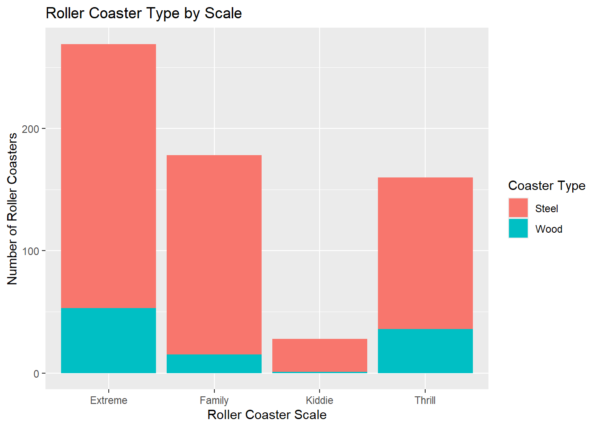
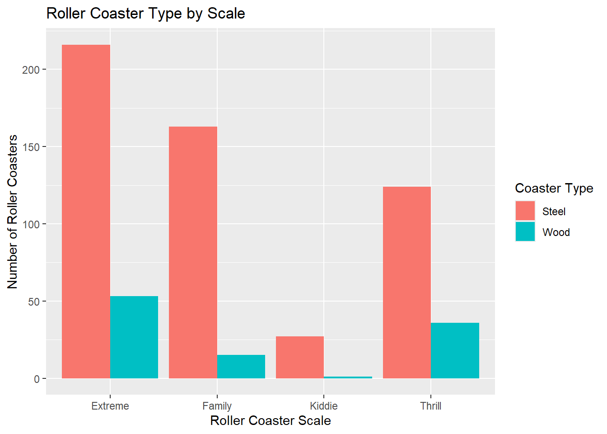

library(tidyverse)
library(httr)
library(jsonlite)Homework 5
Task 1 - Querying an API and a Tidy-Style Function
Question 1
Use GET() from the httr package to return information about a topic of interest that has been in the news lately. Store the result as an R object.
#this creates an HTTP response object
news_return <- GET("https://newsapi.org/v2/everything?q=prediction%20markets&from=2026-08-23&language=en&pageSize=50&apiKey=5666c93387864ff7b1e91fc2cef51c8a")
#to inspect structure
str(news_return, max.level = 1)List of 10
$ url : chr "https://newsapi.org/v2/everything?q=prediction%20markets&from=2026-08-23&language=en&pageSize=50&apiKey=5666c93"| __truncated__
$ status_code: int 200
$ headers :List of 12
..- attr(*, "class")= chr [1:2] "insensitive" "list"
$ all_headers:List of 1
$ cookies :'data.frame': 0 obs. of 7 variables:
$ content : raw [1:42696] 7b 22 73 74 ...
$ date : POSIXct[1:1], format: "2026-09-23 22:54:25"
$ times : Named num [1:6] 0 0.0254 0.0323 0.0488 0.1568 ...
..- attr(*, "names")= chr [1:6] "redirect" "namelookup" "connect" "pretransfer" ...
$ request :List of 7
..- attr(*, "class")= chr "request"
$ handle :Class 'curl_handle' <externalptr>
- attr(*, "class")= chr "response"Question 2
Parse what is returned and find the data frame containing the article information.
# Parse the API response
parsed <- fromJSON(rawToChar(news_return$content))
# Convert the article information to a tibble
article_info <- as_tibble(parsed$articles)
glimpse(article_info)Rows: 49
Columns: 8
$ source <df[,2]> <data.frame[26 x 2]>
$ author <chr> "Kate Knibbs", "Jon Small", "Kyle Torpey", "Reuters", "…
$ title <chr> "George Santos Just Got Hit With Kalshi’s First-Ever Lifet…
$ description <chr> "The former US representative was also fined more than $71…
$ url <chr> "https://www.wired.com/story/george-santos-gets-a-lifetime…
$ urlToImage <chr> "https://media.wired.com/photos/6a958e6735670edd292eaf69/1…
$ publishedAt <chr> "2026-08-31T15:27:31Z", "2026-09-10T13:45:00Z", "2026-09-2…
$ content <chr> "Former Republican congressman George Santos has received …# Convert source back to a list column
article_info <- article_info |>
mutate(
source = pmap(source, \(...) list(...))
)
glimpse(article_info)Rows: 49
Columns: 8
$ source <list> ["wired", "Wired"], [NA, "Entrepreneur"], [NA, "Gizmodo.c…
$ author <chr> "Kate Knibbs", "Jon Small", "Kyle Torpey", "Reuters", "Max…
$ title <chr> "George Santos Just Got Hit With Kalshi’s First-Ever Lifet…
$ description <chr> "The former US representative was also fined more than $71…
$ url <chr> "https://www.wired.com/story/george-santos-gets-a-lifetime…
$ urlToImage <chr> "https://media.wired.com/photos/6a958e6735670edd292eaf69/1…
$ publishedAt <chr> "2026-08-31T15:27:31Z", "2026-09-10T13:45:00Z", "2026-09-2…
$ content <chr> "Former Republican congressman George Santos has received …NOTE: Using fromJSON() automatically simplifies the nested structure into a data frame, so we have to convert the source column back to a list as requested in the assignment.
Question 3
Write a function that allows the user to query the API. The function should take:
- a title or subject to search for,
- a starting date,
- an API key.
Use the function twice to demonstrate that it works.
news_query <- function(subject, start_date, api_key) {
# Send request to NewsAPI
response <- GET(
"https://newsapi.org/v2/everything",
query = list(
q = subject,
from = start_date,
language = "en",
pageSize = 50,
apiKey = api_key
)
)
# Parse the API response
parsed <- fromJSON(rawToChar(response$content))
# Convert the article information into a tibble
article_info <- as_tibble(parsed$articles)
# Convert source back to a list column
article_info <- article_info |>
mutate(
source = pmap(source, \(...) list(...))
)
return(article_info)
}
#Test 1
test1 <- news_query(
"prediction markets",
"2026-09-18",
"5666c93387864ff7b1e91fc2cef51c8a"
)
glimpse(test1) #beforeRows: 47
Columns: 8
$ source <list> [NA, "Gizmodo.com"], ["business-insider", "Business Insid…
$ author <chr> "Kyle Torpey", "jciolli@businessinsider.com (Joe Ciolli)",…
$ title <chr> "Polymarket Bug Reportedly Let Identity Thieves Into Exist…
$ description <chr> "The flaw apparently exposed accounts, and the cards and b…
$ url <chr> "https://gizmodo.com/polymarket-bug-reportedly-let-identit…
$ urlToImage <chr> "https://gizmodo.com/app/uploads/2026/01/shutterstock_2649…
$ publishedAt <chr> "2026-09-20T18:23:50Z", "2026-09-18T09:50:01Z", "2026-09-2…
$ content <chr> "Nearly 500 Polymarket US users were hit in late July by a…head(test1$title)[1] "Polymarket Bug Reportedly Let Identity Thieves Into Existing Accounts"
[2] "Wall Street is cramming for the midterms. Here’s a handy market cheat sheet."
[3] "9 Ads per Minute: FIFA Cup 26 – \"the price of the beautiful game\""
[4] "10 of the US' youngest billionaires in 2026 — and how they got their fortunes"
[5] "OpenAI is about to eat Jev's lunch – Arcturus Labs"
[6] "U.S. Regulator Expands Crypto Trading To Online Platforms" #Test 2
test2 <- news_query(
"Clarity Act",
"2026-09-18",
"5666c93387864ff7b1e91fc2cef51c8a"
)
glimpse(test2) #afterRows: 50
Columns: 8
$ source <list> [NA, "Gizmodo.com"], ["the-next-web", "The Next Web"], [N…
$ author <chr> "Kyle Torpey", "Ana Maria Constantin", "JC Torres", "Surbh…
$ title <chr> "Elon Musk’s X Sues Bitcoin Account Network It Says Farmed…
$ description <chr> "X wants the money rewarded to accounts that copy-pasted c…
$ url <chr> "https://gizmodo.com/elon-musks-x-sues-bitcoin-account-net…
$ urlToImage <chr> "https://gizmodo.com/app/uploads/2025/12/GettyImages-15622…
$ publishedAt <chr> "2026-09-21T23:05:25Z", "2026-09-22T11:26:56Z", "2026-09-2…
$ content <chr> "X has sued two of its own users in London, claiming they …head(test2$title)[1] "Elon Musk’s X Sues Bitcoin Account Network It Says Farmed £207,000 Via Fake Engagement"
[2] "Anthropic and OpenAI ask Australia to ease its ban on AI training with local content"
[3] "The Record Player That Skips the Vinyl and Plays Falling Water"
[4] "Bitcoin reclaims $80,000, Ethereum nears $2,620 despite hawkish Fed, CLARITY Act setback"
[5] "I Am Often Wrong"
[6] "4 Reasons Your Target Buyers Aren’t Responding to Your Marketing" Task 2 - Summarizing Roller Coaster Data
Read in the Data
coaster_data <- read_csv(
"https://www4.stat.ncsu.edu/online/datasets/635USrollercoasters.csv"
)Rows: 635 Columns: 21
── Column specification ────────────────────────────────────────────────────────
Delimiter: ","
chr (12): Coaster, Park, City, State, Census Region, AgeGroup, Scale, Type, ...
dbl (9): Year Opened, TopSpeed, MaxHeight, Drop, Length, Duration, # of Inv...
ℹ Use `spec()` to retrieve the full column specification for this data.
ℹ Specify the column types or set `show_col_types = FALSE` to quiet this message.Question 4
Look at how the data is stored and determine whether everything makes sense. Convert variables to factors as needed.
#checking structure of data to make sure it makes sense
str(coaster_data)spc_tbl_ [635 × 21] (S3: spec_tbl_df/tbl_df/tbl/data.frame)
$ Coaster : chr [1:635] "Adrenaline Peak" "Adventure Express" "Afterburn" "Aftershock" ...
$ Park : chr [1:635] "Oaks Amusement Park" "Kings Island" "Carowinds" "Silverwood Theme Park" ...
$ City : chr [1:635] "Portland" "Mason" "Charlotte" "Athol" ...
$ State : chr [1:635] "Oregon" "Ohio" "North Carolina" "Idaho" ...
$ Census Region : chr [1:635] "West" "Midwest" "South" "West" ...
$ Year Opened : num [1:635] 2018 1991 1999 2008 2010 ...
$ AgeGroup : chr [1:635] "3:Newest" "2:Recent" "2:Recent" "3:Newest" ...
$ TopSpeed : num [1:635] 45 35 62 65.6 22 67 35 66 48 50 ...
$ MaxHeight : num [1:635] 72 63 113 192 25 ...
$ Scale : chr [1:635] "Extreme" "Thrill" "Extreme" "Extreme" ...
$ Type : chr [1:635] "Steel" "Steel" "Steel" "Steel" ...
$ Design : chr [1:635] "Sit Down" "Sit Down" "Inverted" "Inverted" ...
$ Drop : num [1:635] 70 47 110 177 22.5 170 20 147 80 144 ...
$ Length : num [1:635] 1050 2963 2956 1204 628 ...
$ Duration : num [1:635] 66 140 167 92 47 190 100 143 110 110 ...
$ Inversions? : chr [1:635] "Yes" "No" "Yes" "Yes" ...
$ # of Inversions: num [1:635] 3 0 6 3 0 6 0 0 0 4 ...
$ Make : chr [1:635] "Gerstlauer Amusement Rides GmbH" "Arrow Dynamics" "Bolliger & Mabillard" "Vekoma" ...
$ Latitude : num [1:635] 45.5 39.4 35.3 47.9 28 ...
$ Longitude : num [1:635] -122.7 -84.3 -80.8 -116.7 -82.6 ...
$ Boundary : chr [1:635] "{\"type\":\"Feature\",\"properties\":{\"CENSUSAREA\":95988.013,\"NAME\":\"Oregon\",\"GEO_ID\":\"0400000US41\",\"| __truncated__ "{\"type\":\"Feature\",\"properties\":{\"CENSUSAREA\":40860.694,\"NAME\":\"Ohio\",\"GEO_ID\":\"0400000US39\",\"L"| __truncated__ "{\"type\":\"Feature\",\"properties\":{\"CENSUSAREA\":48617.905,\"NAME\":\"North Carolina\",\"GEO_ID\":\"0400000"| __truncated__ "{\"type\":\"Feature\",\"properties\":{\"CENSUSAREA\":82643.117,\"NAME\":\"Idaho\",\"GEO_ID\":\"0400000US16\",\""| __truncated__ ...
- attr(*, "spec")=
.. cols(
.. Coaster = col_character(),
.. Park = col_character(),
.. City = col_character(),
.. State = col_character(),
.. `Census Region` = col_character(),
.. `Year Opened` = col_double(),
.. AgeGroup = col_character(),
.. TopSpeed = col_double(),
.. MaxHeight = col_double(),
.. Scale = col_character(),
.. Type = col_character(),
.. Design = col_character(),
.. Drop = col_double(),
.. Length = col_double(),
.. Duration = col_double(),
.. `Inversions?` = col_character(),
.. `# of Inversions` = col_double(),
.. Make = col_character(),
.. Latitude = col_double(),
.. Longitude = col_double(),
.. Boundary = col_character()
.. )
- attr(*, "problems")=<externalptr> #converting data; note the ` ` for the column headers with special characters
coaster_data2 <- coaster_data |>
mutate(State = as.factor(State),
`Census Region` = as.factor(`Census Region`),
AgeGroup = as.factor(AgeGroup),
Scale = as.factor(Scale),
Type = as.factor(Type),
Design = as.factor(Design),
`Inversions?` = as.factor(`Inversions?`),
Make = as.factor(Make)) #added make as factor
str(coaster_data2)tibble [635 × 21] (S3: tbl_df/tbl/data.frame)
$ Coaster : chr [1:635] "Adrenaline Peak" "Adventure Express" "Afterburn" "Aftershock" ...
$ Park : chr [1:635] "Oaks Amusement Park" "Kings Island" "Carowinds" "Silverwood Theme Park" ...
$ City : chr [1:635] "Portland" "Mason" "Charlotte" "Athol" ...
$ State : Factor w/ 40 levels "Alabama","Arizona",..: 30 28 27 9 7 37 26 10 21 37 ...
$ Census Region : Factor w/ 4 levels "Midwest","Northeast",..: 4 1 3 4 3 3 2 1 1 3 ...
$ Year Opened : num [1:635] 2018 1991 1999 2008 2010 ...
$ AgeGroup : Factor w/ 3 levels "1:Older","2:Recent",..: 3 2 2 3 3 2 2 2 3 2 ...
$ TopSpeed : num [1:635] 45 35 62 65.6 22 67 35 66 48 50 ...
$ MaxHeight : num [1:635] 72 63 113 192 25 ...
$ Scale : Factor w/ 4 levels "Extreme","Family",..: 1 4 1 1 2 1 4 1 4 1 ...
$ Type : Factor w/ 2 levels "Steel","Wood": 1 1 1 1 1 1 1 2 2 1 ...
$ Design : Factor w/ 7 levels "Bobsled","Flying",..: 4 4 3 3 4 3 1 4 4 4 ...
$ Drop : num [1:635] 70 47 110 177 22.5 170 20 147 80 144 ...
$ Length : num [1:635] 1050 2963 2956 1204 628 ...
$ Duration : num [1:635] 66 140 167 92 47 190 100 143 110 110 ...
$ Inversions? : Factor w/ 2 levels "No","Yes": 2 1 2 2 1 2 1 1 1 2 ...
$ # of Inversions: num [1:635] 3 0 6 3 0 6 0 0 0 4 ...
$ Make : Factor w/ 53 levels "Allan Herschell Company",..: 15 2 5 48 53 5 21 21 18 2 ...
$ Latitude : num [1:635] 45.5 39.4 35.3 47.9 28 ...
$ Longitude : num [1:635] -122.7 -84.3 -80.8 -116.7 -82.6 ...
$ Boundary : chr [1:635] "{\"type\":\"Feature\",\"properties\":{\"CENSUSAREA\":95988.013,\"NAME\":\"Oregon\",\"GEO_ID\":\"0400000US41\",\"| __truncated__ "{\"type\":\"Feature\",\"properties\":{\"CENSUSAREA\":40860.694,\"NAME\":\"Ohio\",\"GEO_ID\":\"0400000US39\",\"L"| __truncated__ "{\"type\":\"Feature\",\"properties\":{\"CENSUSAREA\":48617.905,\"NAME\":\"North Carolina\",\"GEO_ID\":\"0400000"| __truncated__ "{\"type\":\"Feature\",\"properties\":{\"CENSUSAREA\":82643.117,\"NAME\":\"Idaho\",\"GEO_ID\":\"0400000US16\",\""| __truncated__ ...In the original data, several categorical variables were stored as character variables, specifically State, Census Region, AgeGroup, Scale, Type, Design, Inversions?, and Make. They were converted to factors using the mutate() function. As noted in class, factors are useful for categorical variables because they have a levels attribute that becomes helpful for ordering and plotting.
Question 5
Document any missing values in the data.
#from EDA material that shows us how to find missing data
colSums(is.na(coaster_data2)) Coaster Park City State Census Region
0 0 0 0 0
Year Opened AgeGroup TopSpeed MaxHeight Scale
0 0 74 8 0
Type Design Drop Length Duration
0 0 128 33 66
Inversions? # of Inversions Make Latitude Longitude
0 0 36 0 0
Boundary
0 Missing data are found in TopSpeed = 74, MaxHeight = 8, Drop = 128, Length =33, Duration = 66, and Make = 36
Categorical Variables
Question 6
Create:
- a one-way contingency table,
- a two-way contingency table,
- a three-way contingency table.
Use table() and interpret one value from each resulting table.
One-Way Table
# One-way contingency table
table(coaster_data2$Type)
Steel Wood
530 105 There are 635 roller coaster observations in the data. 530 are made from steel and 105 are made from wood.
Two-Way Table
# Two-way contingency table
table(coaster_data2$Scale, coaster_data2$Type)
Steel Wood
Extreme 216 53
Family 163 15
Kiddie 27 1
Thrill 124 36The scale of the roller coaster further classifies the ride by its intensity level across the type variable. It shows that the Extreme intensity level is the most popular (216 + 53 = 269 rides) while the Kiddie intensity level is the least popular (27 + 1 = 28 rides).
Three-Way Table
# Three-way contingency table
table(
coaster_data2$Scale,
coaster_data2$Type,
coaster_data2$`Inversions?`), , = No
Steel Wood
Extreme 50 49
Family 163 15
Kiddie 27 1
Thrill 124 36
, , = Yes
Steel Wood
Extreme 166 4
Family 0 0
Kiddie 0 0
Thrill 0 0The Inversions? factor tells us the number of roller coasters that have inversions. Of the 635 roller coasters in our sample there are 170, or about 27%, that have loops. It is also evident that the material of choice to accommodate for loops is steel given it accounts for 166 of the 170 roller coasters.
Question 7
Create a conditional two-way table using two different methods.
Method 1 - Subset the Data First
# Filter data to roller coasters with inversions
coaster_inversions <- coaster_data2 |>
filter(`Inversions?` == "Yes")
# Create two-way conditional table
table(coaster_inversions$Scale, coaster_inversions$Type)
Steel Wood
Extreme 166 4
Family 0 0
Kiddie 0 0
Thrill 0 0Method 2 - Subset a Three-Way Table
# Create three-way contingency table
coaster_table <- table(
coaster_data2$Scale,
coaster_data2$Type,
coaster_data2$`Inversions?`
)
# Condition on `Inversions?` = Yes
coaster_table[, , "Yes"]
Steel Wood
Extreme 166 4
Family 0 0
Kiddie 0 0
Thrill 0 0Question 8
Create a two-way contingency table using group_by() and summarize(). Then use pivot_wider() so that the result resembles the output from table().
coaster_data2 |>
group_by(Scale, Type) |>
summarize(count = n()) |>
pivot_wider(
names_from = Type, #determines column headings, in this case `Type`
values_from = count
)# A tibble: 4 × 3
# Groups: Scale [4]
Scale Steel Wood
<fct> <int> <int>
1 Extreme 216 53
2 Family 163 15
3 Kiddie 27 1
4 Thrill 124 36Question 9
Create both a stacked bar graph and a side-by-side bar graph. Include appropriate axis labels and titles.
Stacked Bar Graph
ggplot(
data = coaster_data2,
aes(x = Scale, fill = Type)
) +
geom_bar() +
labs(
x = "Roller Coaster Scale",
y = "Number of Roller Coasters",
fill = "Coaster Type",
title = "Roller Coaster Type by Scale"
)
Side-by-Side Bar Graph
ggplot(
data = coaster_data2,
aes(x = Scale, fill = Type)
) +
geom_bar(position = "dodge") +
labs(
x = "Roller Coaster Scale",
y = "Number of Roller Coasters",
fill = "Coaster Type",
title = "Roller Coaster Type by Scale"
)